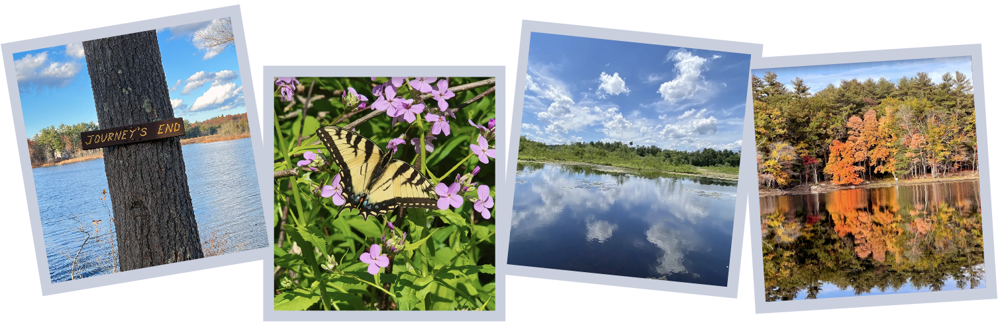

<div id="homepage">


    <main class="container-fluid">

        <header>
            <div>
                <h1>Photo Competition</h1>
            </div>
        </header>

        <section class="row gray-row">
            <div class="col-xs-12">
                <div>
                    
                    <h2>Andover's Treasure</h2><br />
                    <p>
                    <h3>Runs between September 1 - December 19, 2025.<br />AVIS seeks submissions
                        for our 2025 Photo Competition</h3><br />

                    <br /><br />

                    <b>Who Should Enter?</b><br />
                    The AVIS: Andover's Treasure photo contest is open to photographers of all skill levels and ages.  
                    The goal is that your images will stimulate awareness and interest in Andover's Land Trust, and in 
                    the importance of preserving our open spaces.  Your willingness to submit photos (and present 
                    framed prints if selected) will help that mission.  All submissions will be displayed on the 
                    AVIS website; winning and honorable mention images will be exhibited at the Andover Robb Center 
                    and Memorial Hall Library.  You need not be an Andover resident to enter. Submissions from current 
                    AVIS Trustees will not be accepted.<br /><br />

                    <b>What to Enter?</b><br />
                    What does AVIS mean to you?  For 131 years, generations of AVIS volunteers have worked to preserve 
                    land, protect native habitat, and provide opportunities for the public to experience and enjoy 
                    nature. Andover is fortunate to have such a treasure of open space, and we are seeking digital 
                    photographs that capture the essence of our AVIS properties, iconic sites, and landscapes. In 
                    order to qualify, photographs must be taken within an AVIS reservation. For a list of our reservations 
                    go to this page - <a href="/reservations.html">AVIS Reservations</a>. Each entrant may enter a maximum of 
                    3 photographs.  Your entries must have been photographed on or after 1 January 2020.  Please respect 
                    all rules posted on AVIS reservations, and please stay on the trails.<br /><br />

                </div>

                <div>
                    <a href="/competitions/2025-photo/rules.html" class="btn btn-primary">View Photo Competition
                        Rules</a> &nbsp; <a
                        href="https://avisandover.wufoo.com/forms/mitli1kfz23i/"
                        target="_blank" class="btn btn-primary">Submit
                        your entry</a>
                        
                </div>
            </div>


        </section>


    </main>
</div>